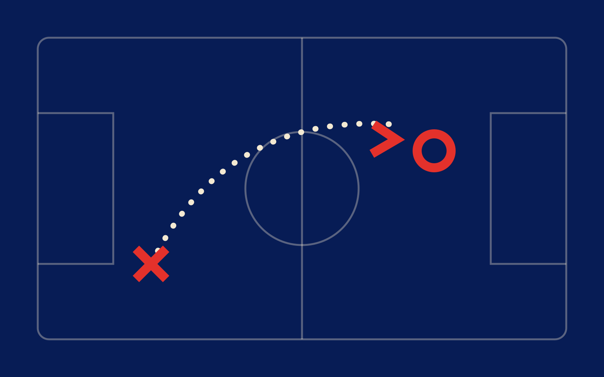

Du bureau
jusqu’au terrain.
Préparez vos séances, vos compositions et vos causeries. Suivez vos joueurs et faites vivre la méthode de votre club.
Découvrir la démonstration →Version neutre. Les documents sont enregistrés dans ce navigateur. Le partage, les comptes et Canva nécessitent la configuration des services dédiés au club.